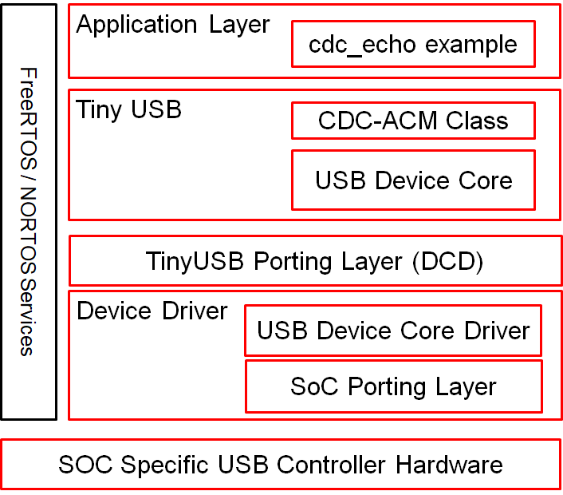

Introduction
The USB SW stack in MCU+ SDK is shown below.

USB SW Stack Block Diagram
There are three layers as listed below,
- TinyUSB: This is the USB stack itself and acts as the interface for user application to USB
- USB Device Driver: This is the USB HW and SOC specific device drivers
- TinyUSB Porting Layer: This is the layer which binds the open source TinyUSB stack to the SOC specific device driver
We encourage customers to use USB peripheral from tinyUSB APIs. The USB CDC Echo Example is using the CDC class API from TinyUSB. This way, customers can easily adapt to other TinyUSB examples.
For advanced customers or 3P USB stack vendors, refer to the USB device driver references listed below.
Features Supported
TinyUSB
TinyUSB is an open-source cross-platform USB Host/Device stack for embedded system, designed to be memory-safe with no dynamic allocation and thread-safe with all interrupt events are deferred then handled in the non-ISR task function.
Below features are supported in the SDK
- USB device
- USB CDC Class
- USB DFU Class
- USB NCM Class
- USB RNDIS Class
- Note
- Supported TinyUSB version is 0.14.0
USB Device Driver
The USB device driver is the USB HW specific software component that provides a programming abstraction to the Cadence USB IP included in the SOC and supports below features,
- USB device instance creation/deletion
- USB device endpoint handling
- USB device data transfer
- USB device interrupts and DMA
SoC Porting Layer
The SoC porting layer for USB device driver is the glue layer between the SoC and the USB device driver and does the below,
- Pinmux needed for USB device
- Clock source selection needed for USB device
- Clock settings needed for USB device
- Configure the USB HW for USB device mode
SysConfig Features
- Note
- It is strongly recommend to use SysConfig where it is available instead of using direct SW API calls. This will help simplify the SW application and also catch common mistakes early in the development cycle.
- Initialize USB device driver including clock setup and pinmux
Features Not Supported
- TinyUSB Class Drivers Other Than CDC,DFU,NCM & RNDIS
- TinyUSB Host Core Driver and Class Drivers
- USB 3.0
- USB 2.0 Host Mode
- USB Dual Role Mode
Implementation Note
- USB device class driver should be operating as higher priority task if host driver is implemented as polling for device response with strict timeout.
- If Cadence driver is used with TinyUSB, makefiles of both example and driver should define TINYUSB_INTEGRATION (like default cdc_echo example). This macro defined in driver and not in example or vice versa is an invalid combination.
USB Logging
- User needs to define following macros to enable logs.
- CFG_TUSB_DEBUG for enabling logs in TinyUSB stack .
- CFG_CUSB_DEBUG for enabling logs in USB device driver.
- By defult logging for both the modules will be enabled in debug profile and disabled in release profile.
- There is a provision for enabling and disabling logs for certain modules in USB device driver for better performance. Moreover user can also define required verbosity level.
- Approprite verbosity levels
- DBG_CRIT - critical
- DBG_WARN - warning
- DBG_FYI - fyi
- DBG_HIVERB - highly verbose
- refer to cadence USB device driver module Id to check out module Ids.
- refer to APIs for USB for API definitions.
- Note
- Due to timings issue UART logs may not give expected performance in debug profile as the code is not optimized If user needs high verbose logs is recomended to use UART logs in release profile or use shared memory logging.
- refer Debug for more information on shared memory logging and how to use it.
Important files and directory structure
| Folder/Files | Description |
| ${SDK_INSTALL_PATH}/source/usb/tinyusb |
| config/ | TinyUSB Stack configuration |
| portable/ | TinyUSB Stack porting |
| tinyusb-stack/ | TinyUSB Stack source files |
| ${SDK_INSTALL_PATH}/source/usb/cdn |
| core_driver/ | Cadence USB core driver source files |
| doc/ | Cadence USB core driver documents |
| include/ | Cadence USB core driver Soc porting layer API header files |
| soc/ | Cadence USB core driver Soc porting layer source files |
Additional References
 1.8.20
1.8.20